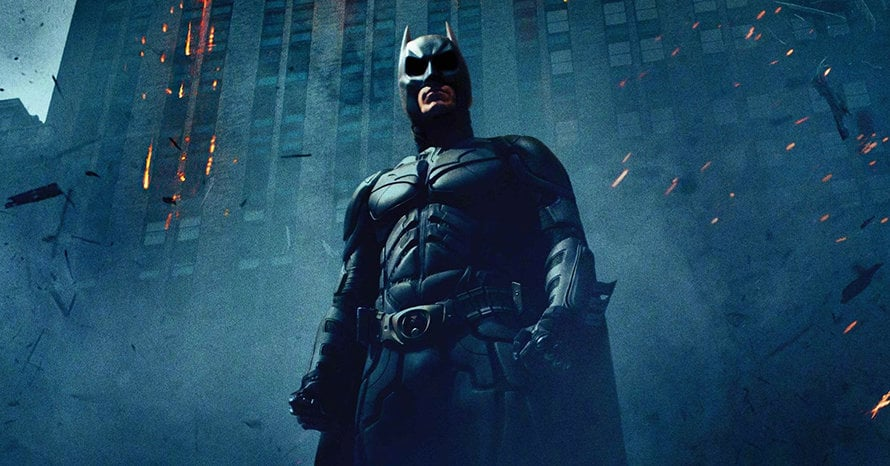

Quem é o Bataman
Batman (Bruce Wayne) é um personagem da DC comics que atua como justiceiro de Gotham. Ele não tem superpoderes, sua força está e, treinamento, inteligencia e recursps (ou seja, rico)
Nas histórias, Gotham costuma problema sociais reais: desigualdade, corrupção e violência urbana. Muitos quadrinhos usam o Batman como forma de critica social, mostrando como decições políticas, intereses ecônomicos, falhas nas intituições e o autoritarismo afetam o cotidiano das pessoas, especialmente nas periferias.
Galeria

